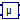

Transient fundamental wave sensors
This package contains sensors to be used with transient flux tubes models in order to provide information for quasi-static parameters.
Extends from Modelica.Icons.SensorsPackage (Icon for packages containing sensors).
| Name | Description |
|---|---|
| FundamentalWavePermabilitySensor | Sensor of fundamental wave permeability |
|  Permeability | Determines permeability from flux and magnetic potential difference |
Sensor of fundamental wave permeability
This sensor is used to determined the effective fundamental wave permeability of a saturated lumped circuit reluctance. For this purpose the sensor is placed such way that the magnetic flux and the magnetic potential difference of the investigated reluctance are sensed. The area of cross section and the effective length of the investigated magnetic path have to be provided as parameters.
See example NonLinearInductor.
Extends from Modelica.Icons.RoundSensor (Icon representing a round measurement device).
| Name | Description |
|---|---|
| f | Fundamental wave frequency [Hz] |
| A | Area of cross section [m2] |
| l | Length [m] |
| Name | Description |
|---|---|
| fluxP | Positive port of flux path |
| fluxN | Negative port of flux path |
| potentialP | Positive port of magnetic potential difference path |
| potentialN | Negative port of magnetic potential difference path |
| mu | Absolute permeability [H/m] |
| mur | Relative permeability [1] |
Determines permeability from flux and magnetic potential difference
This model determines the absolute and relative permeability from two real inputs:
In order to calculate the permeabilities, the area of cross section,
 ,
and the geometric length,
,
of the flux path have to be take into account
,
and the geometric length,
,
of the flux path have to be take into account
In case that the magnetic potential difference is close to zero, permeabilities yield:
| Name | Description |
|---|---|
| A | Area of cross section penetrated by flux [m2] |
| l | Length associated with magnetic potential difference [m] |
| Name | Description |
|---|---|
| Phi | Magnetic flux [Wb] |
| V_m | Magnetic potential difference [A] |
| mu | Absolute permeability [H/m] |
| mur | Relative permeability [1] |